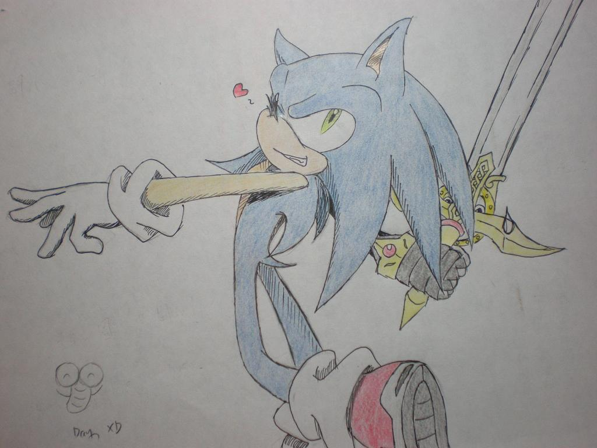

這張圖是邊聽\"歌舞青春\"的音樂邊畫的
正是所謂的\"青春無敵\"啊!XD
所以就把SONIC畫的歡樂一點
他在跳舞喔XDD
開心嗎?好開心!!
附件: DSCN0576.JPG
另外左下部分是我目前的...代表(我還在想自創人物
我會繼續畫的XD
PS數學物理考爆了...
拋媚眼的啊禿ww
神情動作都畫得很不錯
歌舞青春的歌當然是青春無敵了
我也很喜歡的說=3=
旁邊那隻劍叔叔好像無言到了 ＞▽＜
阿禿動作挺可愛的∼所以說阿禿正在跟劍叔叔跳舞囉？（手誤）
耳朵畫的很可愛，鞋子＆襪子感覺也很棒
很厲害的說 ＯuＯ
話說＂爆了＂是什麼意思...？
先前好像也有在哪篇文章也看到樓主這樣打過？
整張圖好歡樂 www
紳士劍好像很無奈似的 XD
自創人物方面如何啦? [:smile19:]
啊∼动作和表情都很赞呢【看来我要加大临摹官图的量了】
ps；俺也想知道考爆了是什么意思,不过说到数学考试让我想到以前初中时我和旁边俩个同学的分数加起来没超过100 orz【满分100】
回臥月&菜菜:
爆了就是考爛掉的意思...(囧
其實除了盔甲.劍和細部部分是看圖以外
其他都是自己亂畫的...
因為沒有掃描器都只能拍照真不好意思XD
我會再努力畫SONIC&讀書!!(炸
回snowy-su:
自創人物應該是狼吧
下次再PO上來 也許(汗 XD